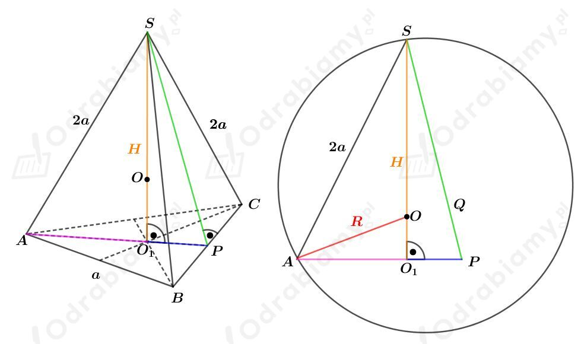
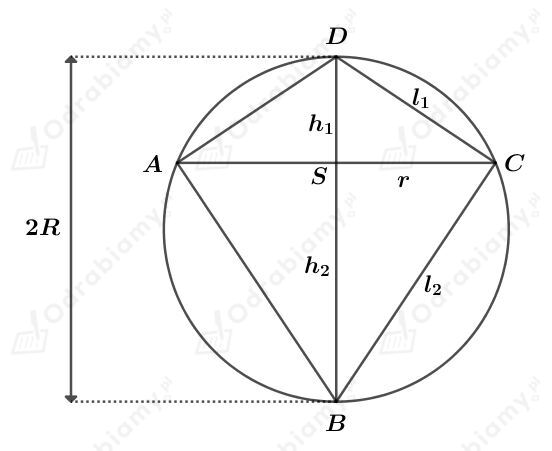

Rysunek:

Odcinek AP jest wysokością trójkąta równobocznego ABC. Korzystając ze wzoru na długość wysokości trójkąta równobocznego mamy:
Korzystając z twierdzenia Pitagorasa dla trójkąta AO1S mamy:
Zauważmy, że
Korzystając z twierdzenia Pitagorasa dla trójkąta AO1O mamy:
Wyznaczmy objętość tej kuli. Mamy:
Dana jest kula o promieniu długości R. W daną kulę wpisano dwa stożki o wspólnej podstawie.
Rysunek:

Z treści zadania wiemy, że pole powierzchni bocznej jednego z tych stożków jest dwa razy większe od pola powierzchni bocznej drugiego. Mamy stąd:
Rozważmy trójkąt BCD. Na tym trójkącie opisano okrąg o średnicy DB będącej jego bokiem, zatem trójkąt ten jest prostokątny.
Korzystając z twierdzenia Pitagorasa dla trójkąta BCD mamy:
Korzystając z podobieństwa trójkątów DBC i BCS mamy: